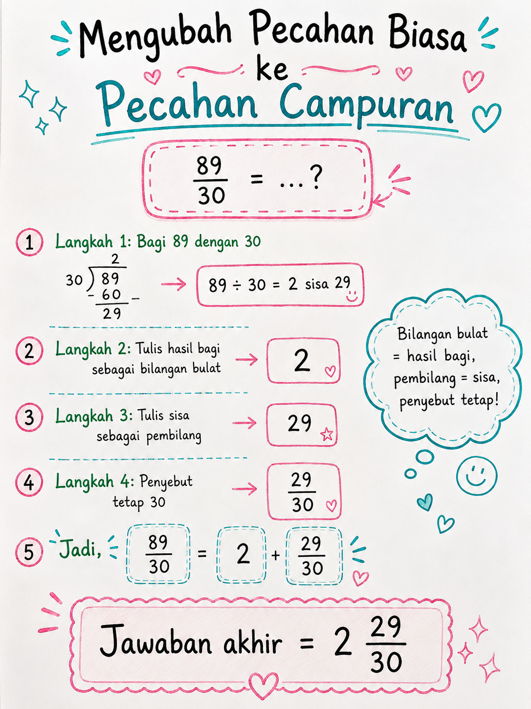
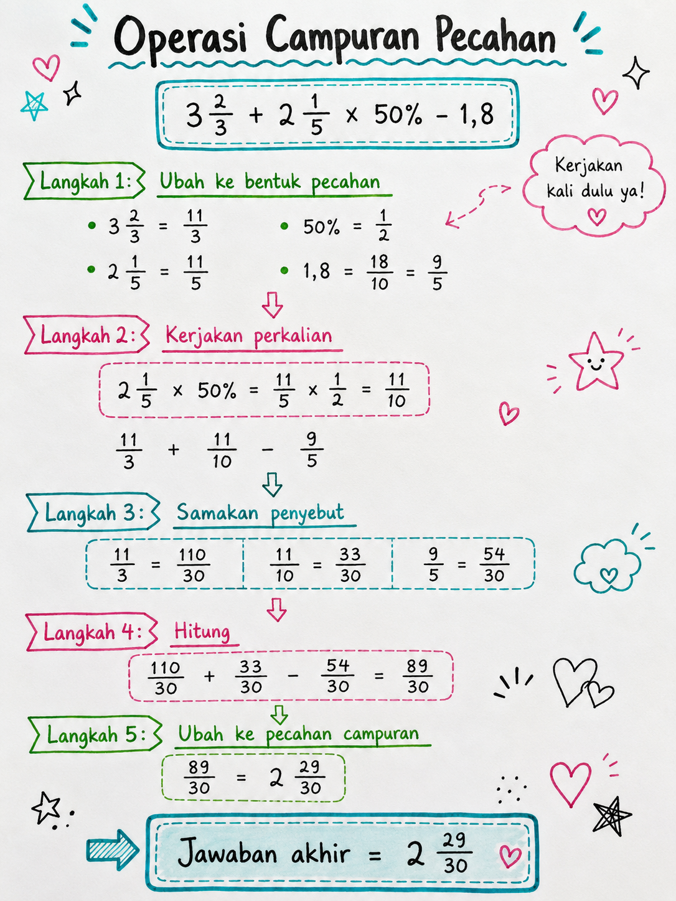

TIU — Operasi Campuran Pecahan, Persen & Desimal
Kategori: TIU — Operasi Bilangan
Tingkat: Sedang
ID Soal: c9a8f3e2
Soal
Hasil dari $3\dfrac{2}{3} + 2\dfrac{1}{5} \times 50\% - 1{,}8$ adalah ...
- a. $1\dfrac{2}{15}$
- b. $2\dfrac{29}{30}$ ✅
- c. $3\dfrac{1}{30}$
- d. $4\dfrac{1}{30}$
- e. $2\dfrac{1}{30}$
Aturan yang Dipakai
- Kerjakan × dan ÷ dari kiri ke kanan (prioritas lebih tinggi).
- Kerjakan + dan − dari kiri ke kanan (setelah × dan ÷ selesai).
- Ubah pecahan campuran, persen, dan desimal menjadi pecahan biasa agar mudah dihitung.
Pembahasan
Langkah 1 — Ubah ke bentuk pecahan
$$3\tfrac{2}{3} = \frac{11}{3}, \quad 2\tfrac{1}{5} = \frac{11}{5}$$
$$50\% = \frac{1}{2}, \quad 1{,}8 = \frac{18}{10} = \frac{9}{5}$$
Langkah 2 — Kerjakan perkalian dulu
$$2\tfrac{1}{5} \times 50\% = \frac{11}{5} \times \frac{1}{2} = \frac{11}{10}$$
Soal menjadi:
$$\frac{11}{3} + \frac{11}{10} - \frac{9}{5}$$
Langkah 3 — Samakan penyebut (KPK 3, 10, 5 = 30)
$$\frac{11}{3} = \frac{110}{30}, \quad \frac{11}{10} = \frac{33}{30}, \quad \frac{9}{5} = \frac{54}{30}$$
Langkah 4 — Hitung
$$\frac{110}{30} + \frac{33}{30} - \frac{54}{30} = \frac{110 + 33 - 54}{30} = \frac{89}{30}$$
Langkah 5 — Ubah ke pecahan campuran
$89 \div 30 = 2$ sisa $29$, jadi:
$$\frac{89}{30} = 2\tfrac{29}{30}$$

Jawaban
$$\boxed{b. \; 2\tfrac{29}{30}}$$
Catatan Visual

Konsep Kunci
- Urutan operasi: Kurung → Pangkat → × dan ÷ (kiri → kanan) → + dan − (kiri → kanan).
- Pecahan campuran → biasa: $a\tfrac{b}{c} = \dfrac{a \times c + b}{c}$.
- Persen → pecahan: $p\% = \dfrac{p}{100}$.
- Desimal → pecahan: geser koma, pakai penyebut 10/100/1000.
- KPK 3, 5, 10 = 30 — hafalkan KPK pasangan kecil agar cepat menyamakan penyebut.
Jebakan Umum
- ❌ Mengerjakan dari kiri ke kanan tanpa mendahulukan perkalian. Jika dipaksa: $(3\tfrac{2}{3} + 2\tfrac{1}{5}) \times \tfrac{1}{2} - 1{,}8 = 1\tfrac{2}{15}$ — jawaban yang salah (opsi a).
- ❌ Lupa mengubah $1{,}8 = \tfrac{9}{5}$ — sering ditulis salah jadi $\tfrac{1}{8}$.
- ❌ Salah cari KPK 3, 10, 5 — yang benar adalah 30, bukan 15 atau 150.
- ❌ Lupa menyederhanakan $\tfrac{89}{30}$ ke pecahan campuran $2\tfrac{29}{30}$ saat opsi jawaban berbentuk campuran.